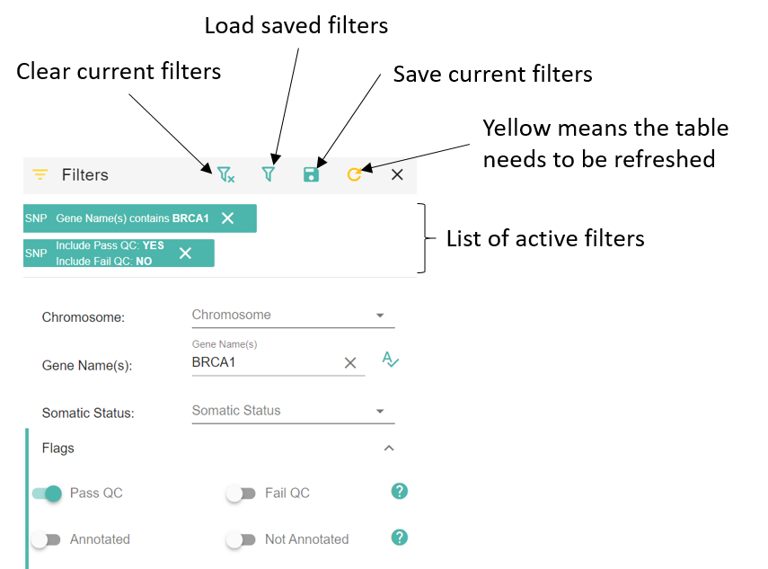

Open Case¶
The goal of this page is to select variants and create annotations going into the final report.
Any change on the page is saved every 2 minutes or by clicking the save button at the top right corner in the toolbar.
Toolbar menu and buttons¶

Patient Details¶
All cases need an OncoTree Diagnosis value. You can open Oncotree or OncoKB Genie Portal by using the two buttons next to the text field.
{kind=link}
Case Notes¶
You can write any notes about the case that don’t fit into a standard annotation.
Variant Tables (SNP, CNV, FUSION)¶
Click on each tab to display the corresponding variants.
The Flags column indicates that a variant has failed or passed QC, has annotations ( from MD Anderson,
from MD Anderson,  from UTSW),
or has some warnings such as being a common variant.
from UTSW),
or has some warnings such as being a common variant.
The variant tables show all variants in the case VCFs, inclucing variants that failed our quality metrics. To narrow down the list of variants, click on Advanced Filtering and the Filters menu will open.
Here you can filter on any field available in the variant table.
For instance, click on Pass QC and then click Refresh
{kind=link}
More options are available when clicking on  Filters.
You can save filters for later use or load predefined gene sets.
Filters.
You can save filters for later use or load predefined gene sets.
More information on creating your own gene sets here: Annotations.

To explore a variant details,
click on the magnifying glass next to the variants position 
Variant Details (Annotations)¶
This page shows more detailed information about a variant (SNP, CNV or Fusion). You can browse existing annotations, create new ones see other transcripts and explore external tools and databases such as IGV, gnomAD, Cosmic.
Some features are specific to the variant type such as the CNV chart.
If you think this variant should go into the report, click the SELECT VARIANT button. To go into the report, a variant needs tiered annotations. More information here: MDA and UTSW Annotations
Toolbar menu and buttons¶

Variant Details Panel (SNP)¶
Shows all data available in the variant table row. And provide links to external tools.

Variant Details Panel (CNV)¶
When opening a CNV, you can display a chart of the chromosome containing the CNV and create a new CNV by zooming in to the desired location.

Transcripts (SNP)¶
If you think the canonical transcript is not the correct one, select an alternate transcript from the Other VCF Annotations table.

MDA and UTSW Annotations¶
Other users may already have created annotations for a variant or a gene.
Annotations have a scope which allows to apply this annotations to other genes or variants. Annotations can also be limited to a case or a diagnosis. This means that creating a gene level annotation will make the annotation visible to any variant in that gene for any case in Answer.
Click on ADD/EDIT to create new annotations or edit existing ones. You can only edit annotations you have created.
Create/Edit Annotations¶
Annotations are specific to the type of variant (SNP, CNV or Fusion) but they share general principles such as a scope. An orange background indicates that you are in edit mode as opposed to just view mode.
The scope determines where the annotation applies to other cases/genes/variants/diagnosis. By changing the scope you can determine if an annotation should be visible for any variant in the current gene for instance (Gene Specific). Or only for the current mutation (Gene Specific + Variant Specific) Or only for the current mutation in the current case (Case Specific + Gene Specific + Variant Specific)
You can create regular annotations or clinical trials. Different fields are required depending on the annotation and variant type so the SAVE / UPDATE button might be disabled until all requirements are met. You can always go back and change you annotations so feel free to explore the different menus and options. Tooltips will guide you through the buttons and drop down functions.
You can create multiple annotations or trials by clicking  multiple times.
multiple times.
Don’t forget to save your work. Autosave does not apply to creating/editing annotations.
Once you close the panel. The new annotation cards will be displayed in the UTSW Annotations panel.

To include these annotations to the report, click SELECT VARIANT AND toggle each annotation card that you want included. To be valid for reporting, at least one card needs a tier. The highest tier of the selected card will determine the tier of variant in the report.
You can close the window or click PREV. VARIANT or NEXT VARIANT to open other variants.
Review Selected variants¶
Once you have select variants and created annotations that should go into the report, click on Review Variant Selected to get a list of the variants that will go into the report.
Depending on your role, you can mark the case as: - Send variants to MD Anderson: MD Anderson will send Answer annotations and clinical trials matching their database - Ready for review: a reviewer will get an email to check that the appropriate variants are selected and make/select new annotations if needed - Ready for report: the reviewer informs that the annotations are ready and a report can be created
You can change the selection of variants by opening the Variant Details for each row in the tables.